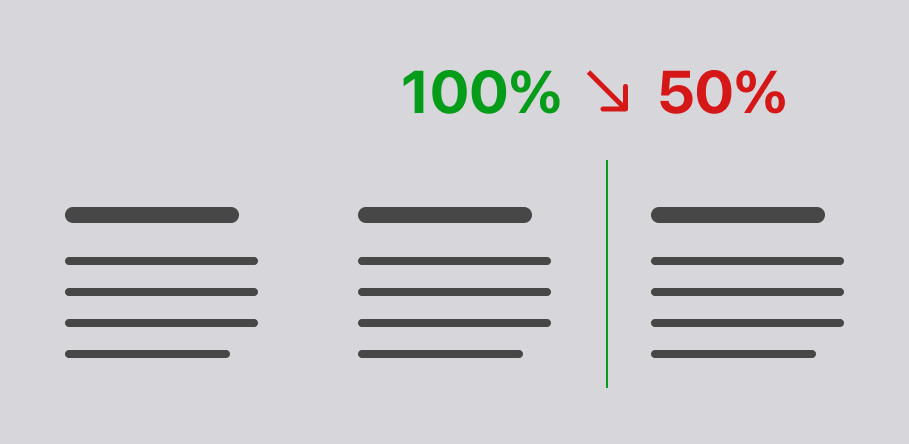
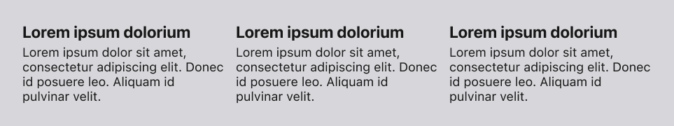
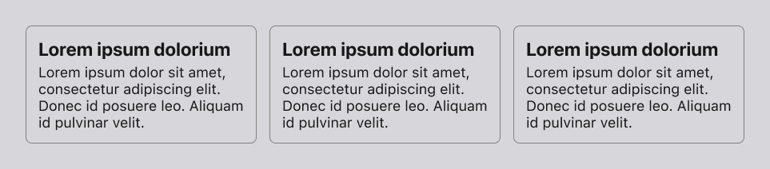
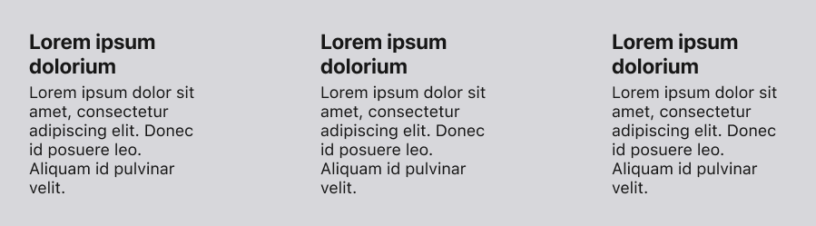
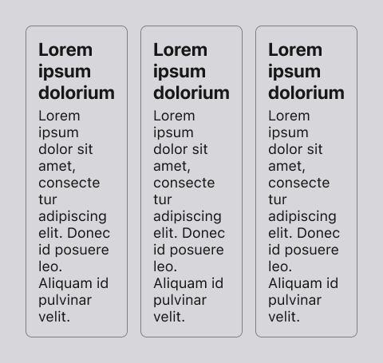
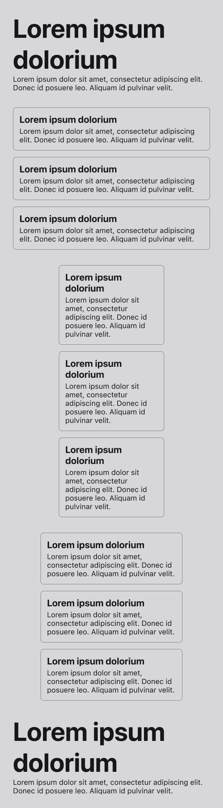
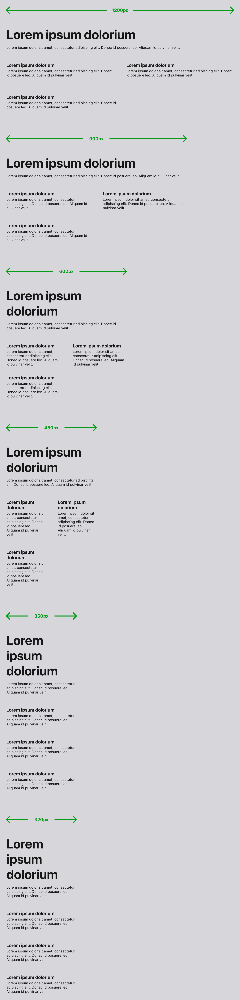

Grid
Grids employ the Don't Fear the Whitespace principle to arrange small contained copy as a group.
Space and Alignment
As paragraphed items exist as elements in a list, e.g., benefits, how it works, features, each item needs to be clearly separated from one another. However, by employing the Swiss design principles, this separation happens without borders or drop shadows—just space and alignment.

This system solves the problem of arranging similar content in a collection of more than three elements while indicating that each element is individual. To extend this, things in a row of three will see a 50% drop in the third element. This leads to content intended to convert not even being consumed; i.e., layout is a detriment to content.

Core Concept
There are many occasions where a landing page must have an unordered collection of copy.
For example, having a section for:
- Benefits
- Features
- How it works
- Principles
- etc.
Studying HotJar recordings reveals many common issues that arise from a row of 3 pieces of copy, the most important of which is the above 50% drop-off.
This is why this system only shows an unordered collection of copy in a maximum of 2 columns. Experimentation has shown that this has led to higher conversions on the page.
The Problem with Three
Having two columns leads to fixing a whole raft of other issues.
It starts with how you divide up your page horizontally. If we take a width of 900px (a very reasonable and expected width), then three columns give you 300px per column.
Adding a gap of 16px between the elements means that for copy, you have 868px or 289px per element. But even that is tight; it looks like this:

You can fix this in many ways, but each one introduces a new issue in the process.
Cards
Adding a border around each element makes it possible to create more separation, but you then have to add padding to each one, and now you are losing more width for the copy itself.

Whilst this does technically work, it adds a busy aesthetic to the layout, which goes against any simple design.
More Gap
Another way to fix this problem is to increase the gap between them; this is worse because you lose content width and end up increasing in height awkwardly, and you are now wrapping (and breaking) words that might not be the intention.

This can be remedied by making the font smaller, but then you introduce an accessibility issue.
Center Align Text
But, it Doesn't Matter
So you wrangle all the elements and get it working at 900px wide. What happens when you go under that width? This is where all the above fixes multiply the issue fast. Line length gets painfully short, and element height becomes extremely disproportionate, etc. Here is a width of 480px.

Now what? The most obvious answer is to switch to a full-column layout, aka mobile view. But then that looks weird. Every width that can be used has an experience of not sitting on the page correctly.

Every element is either too wide because it's not yet at a mobile resolution or oddly placed because it's narrow but displaced from the hard left-hand margin.
The solution is 2
The issues above result from the fact that 3 columns work on desktop but not on mobile, and a singular column works on mobile but not on desktop.
Two columns gives you everything you need in the layout. From the principle Form Follows Function, you see this decision is greater than aesthetics of three.

Here, we can see design consistency, everything legible, everything at the right width, and the added bonus of ensuring that visitors will read the third element.
Usage
In the CSS, you can give each item in the grid and the grid itself a class. The constraints of the elements will move the layout to a two-column layout.
<div class="grid">
<div class="grid-item">
<h3>Swiss Design</h3>
<hr />
<p>
Swiss design is characterised by simplicity, functionality, and
precision, often featuring clean lines, minimal ornamentation, and a
focus on materials and craftsmanship to create elegant, understated
products that convey a sense of quality and sophistication.
</p>
</div>
<div class="grid-item">
<h3>Grid System</h3>
<hr />
<p>
In Swiss design, the grid system is employed to create balanced and
harmonious compositions, often using a combination of horizontal and
vertical lines to establish a sense of order and structure.
</p>
</div>
<div class="grid-item">
<h3>Typography</h3>
<hr />
<p>
In Swiss design, typography plays a crucial role, with clean, sans-serif
fonts such as Helvetica and Frutiger being used to convey simplicity,
clarity, and professionalism through their geometric shapes and
straightforward legibility.
</p>
</div>
</div>
The layout automatically changes to a singular column at mobile resolutions, and gaps and spacing are maintained at all resolutions.
Additional
When 3 is the Magic Number
If you have a collection that is not listed in paragraphs, then there is a case for three columns. For example, elements are a graphic and 3-4 words. You are not going to experience the problems above.
Keep it Simple
It is a common design trend to have a graphic, a title, some text, and a decoration. But this is too much and fights against itself. Limit to 2, ideally, a title or number and text.